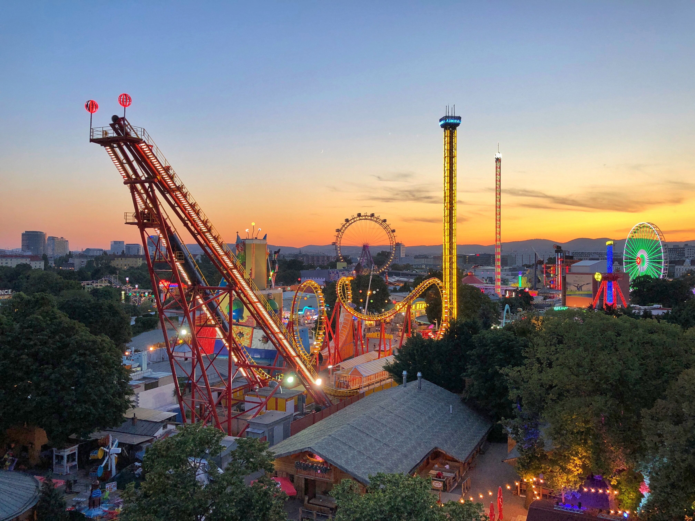
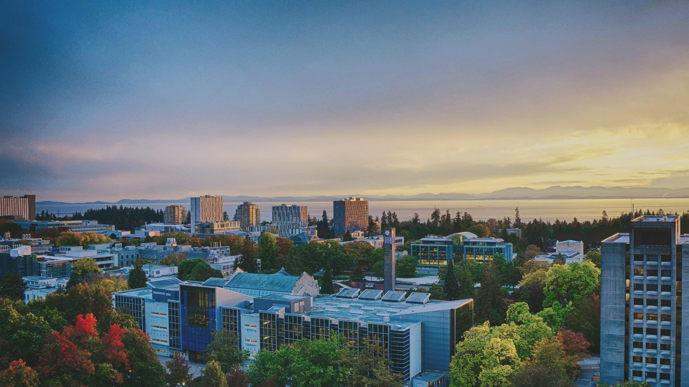

I'm an undergraduate student pursuing an Honours Bsc. degree at the UBC. My current summer work involves developing bioinformatic pipelines to process high dimensional sequencing data, using
Probabilistic Programming (PyroPyMC) for Bayesian modeling to infer clone population based on genomic alteration profiles extracted from ctDNA. MCMC and VI are used to address the intractable integrals common in Bayesian inference. PPL makes the implementation of graphical model efficient.
A side project is quality control for imaging mass cytometry (IMC) data.
My favorite sport is basketball. I love to cook, go hiking, watch movies/series/NBA games in my spare time.
Learn how to use and improve computers while exploring topics such as databases and operating systems, software engineering, security, web development, and numerical methodology. Computer Science gives me a thorough grounding in computer software design, and a broad choice of other studies in computing.
Rewarding courses taken:
The Work Learn International Undergraduate Research Awards are designed for international undergraduate students who are interested in research. This is equivalent to NSERC award for domestic students.
These awards subsidize professors to hire students to work on their research projects. International students who receive the awards gain workplace experience through an undergraduate research opportunity.
Grant value: $4000
Trek Excellence Scholarships are offered every year to students in the top 5% of their undergraduate year, faculty, and school. Domestic students receive an award of $1,500 and international students receive an award of $4,000. Awards of $1,000 are also given to international students who are in the top 5% to 10%.
Scholarships totalling $32,000 have been endowed through a bequest in memory of J. F. Muir by Lillian Muir. The awards are offered to students in the Faculty of Science on the recommendation of the Faculty.
Grant value: $10000
To recognize international students in the Faculty of Science who “demonstrate strong academic achievement, engagement in the Faculty, and the potential to make a scholarly contribution within their chosen field of study.”
Students promoted to second, third, or fourth year with a standing of 90% or better in the previous Winter Session will receive the notation "Science Scholar" on their records if they passed all courses completed and carried a course load of at least 27 percentage-graded credits.
Pulsars are intensively magnetized, rapidly rotating neutron stars that emit periodic radio frequencies. I preprocessed the dataset HTRU2 and trained the KNN classifier through cross-validation following the pipeline. At last, I visualized the distribution of original data by ggplot2 and evaluated performance of classifier via confusion matrix.
View ProjectAn application that mimics UBC Student Service Center with HTML parser. This is an interactive platform where students could view schedule; edit courses; view grades and teaching assistants can create, grade assignments for all students
View Project
APMS concentrates on the domain of themed parks. The database of our project models the employment, logistics, and ticket services of the park. The whole project is built on Django framework and SQLite. We initiated with a comprehensive ER diagram respect to the staff and facilities in the park and normalized all the relation schemas in BCNF to reduce redundancy.
View Project
A full-stack web application with front-end bootstrapped by Jumbotron. Devised Mocha unit test suite and the code passed eslint. Invoke the paradigm of asynchronous programming (i.e. properly handling promises). A back-end server implemented by Typescript to parse the designated queries about courses, buildings and rooms inside UBC. Followed the SOLID design principles and established final RESTful APIs.
View Project
A Java GUI for dict server while connecting to it via Java Socket.
A fully functioned DNS server including resolving domain name, looking for the IP address by recursive approach and a command UI for email protocols such as SMTP/POP3.
A cute armadillo staring at a scalable/contractive coronavirus. Developed in WebGL and Three.js.
View Project